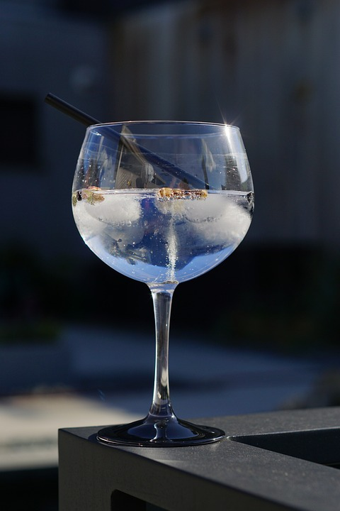

마티니 만들기

마티니 만드는 재료
고든스 진(750ml, 43%) 15,800원 - 이마트 할인가
십스미스 진(700ml, 41.6%) 약 45,000원
비피터 진(700ml, 40%) 27,000원
헤이먼스 런던 드라이 진(700ml, 41.2%) 34,000원 - gs25 어플
앱솔루트 보드카(700ml, 40%) 20,000원
돌린 드라이 베르무트(750ml, 17.5%)
카르파노 스위트 베르무트(1000ml, 16%)